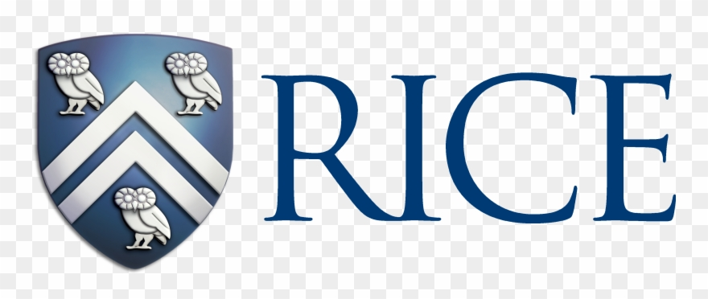
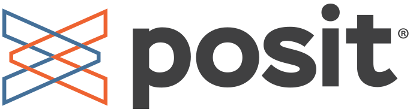

Rice University
Master of Computer Science
Systems · Bellaire, Texas
Clinical research agents that keep their traces, and the Kubernetes, identity, and observability stack that runs them.
Schools


Companies

Master of Computer Science
Bachelor of Science in Computer Science · GPA 3.73/4.00 (90%)
Full-Stack Engineer
Technical Partner & CTO
Full-Stack Engineer · Peking University Sixth Hospital RCT
Full-Stack Engineer · Official site
AI Agent & Full-Stack Engineer
Full-Stack Engineer · Online judge
Primary Author & Front-end Engineer · VAST Challenge 2024